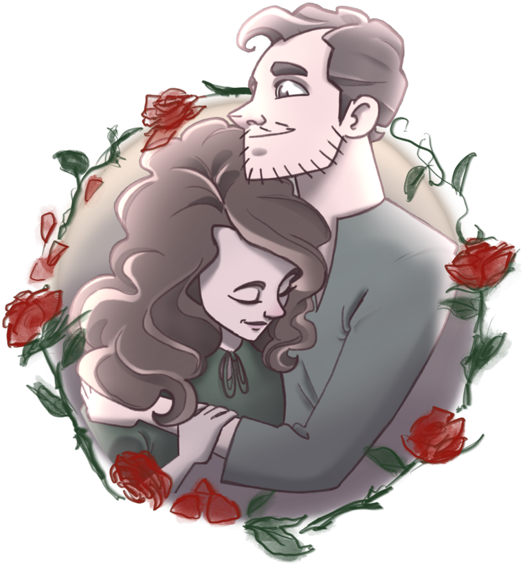

About Me
Hey guys. Probably just the TAs looking at this. I didn’t have any code to showcase on this site so I thought it would be a good opportunity to showcase my art.
Exhibit A: directly to the left, here, you have a picture of me and my fianceé, Brantley Black. (There’s another drawing of the two of us hiding in the Portfolio tab).
You may notice that I do a lot of fan art for movies… there isn’t a ton of rhyme or reason in regards to what inspires me to draw but I am a huge movie fan—to an outright pretentious level—so movie inspired fan art makes up a lot of my work. I love film too much.
And there are also a handful of characters in there that I was developing for an original story. I don’t have any definite plans for what I would like to do with them but I’ve been building an “Act I” for a little while now.